SkillBlenderLC
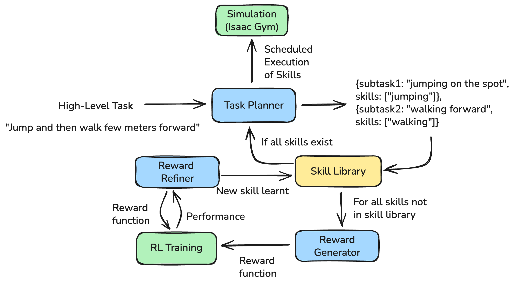
Overview
SkillBlenderLC is a language-conditioned extension of the SkillBlender framework that enables autonomous skill discovery and reward learning for humanoid robots. The system leverages Large Language Models (LLMs) to decompose long-horizon tasks, identify missing skills, automatically generate reward functions, and iteratively refine them using reinforcement learning feedback.
Motivation
- Long-horizon humanoid tasks require sequencing and composing multiple motion skills.
- Fixed skill libraries limit scalability and generalization.
- Manual reward design is brittle, time-consuming, and non-scalable.
- Existing LLM-based reward methods do not adapt based on downstream RL performance.
SkillBlenderLC addresses these challenges with a self-evolving learning loop that connects language reasoning directly to control learning.
System Design
SkillBlenderLC augments the original SkillBlender training stack with three core components:
Task Decomposition
An LLM decomposes a natural-language task into ordered subtasks and required skills, proposing new primitive skills when the current library is insufficient.
Automatic Reward Bootstrapping
For missing skills, the system synthesizes executable Python reward functions using:
- Existing reward templates
- Humanoid environment dynamics
Reward Refinement via RL Feedback
After RL training, performance metrics (stability, convergence, success rate) are fed back to the LLM to refine the reward, enabling iterative improvement and self-evolution.
Experimental Setup
- Simulator: NVIDIA Isaac Gym (PhysX)
- Robot: Unitree H1 (19-DoF humanoid)
- RL Algorithm: PPO
- Parallel environments: 4,096
- Training: 15,000 episodes per skill
LLMs Evaluated
We benchmarked six state-of-the-art LLMs across task decomposition and reward generation:
- GPT-4o
- Claude Sonnet 4.5
- Gemini 2.5 Flash
- LLaMA 3.3 70B
- Mistral Large
- DeepSeek V3
Results
Skill Selection on Long-Horizon Tasks
Evaluated on the eight long-horizon tasks from SkillBlender:
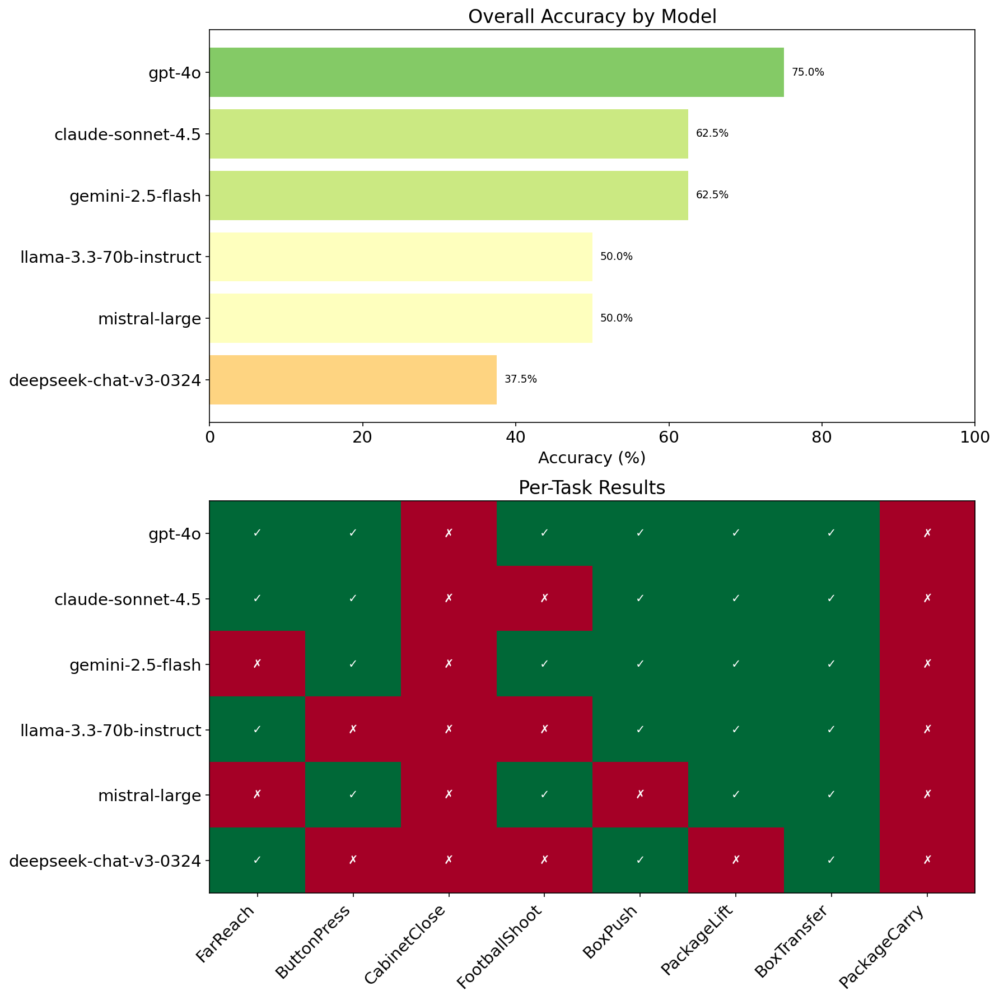
Key insight: LLMs reliably identify primary motion primitives but often miss secondary or contact-rich skills, motivating downstream reward learning.
Reward Generation: Primitive Skill - Squatting
Performance of policies trained using LLM-generated rewards for the Squatting primitive:
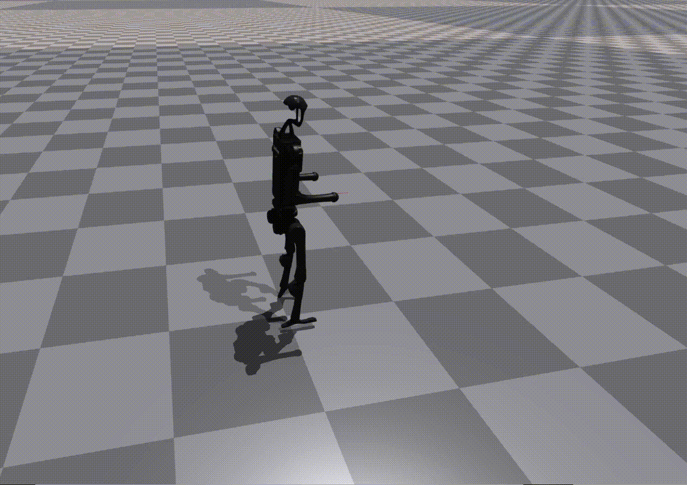

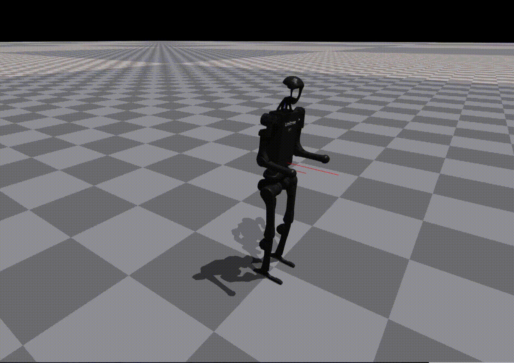
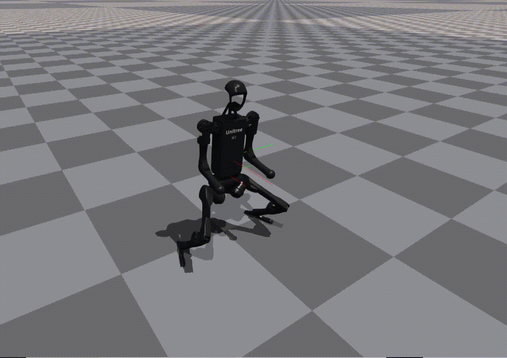
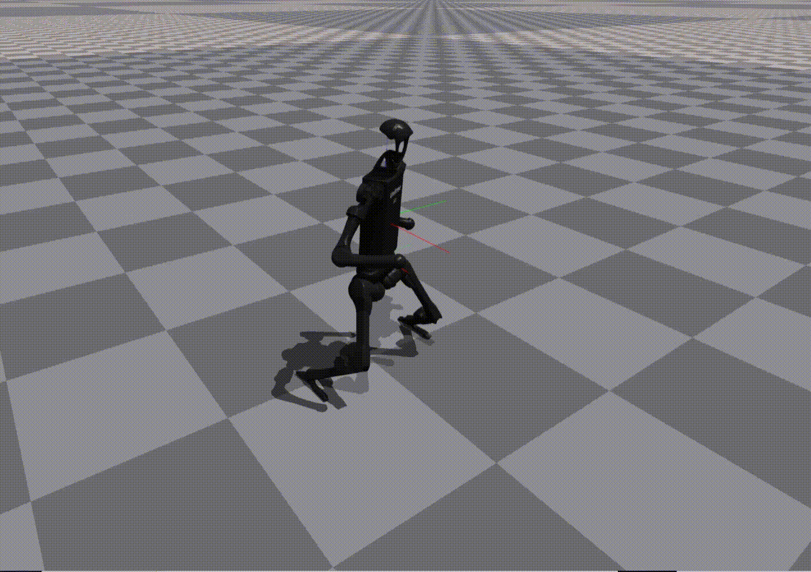

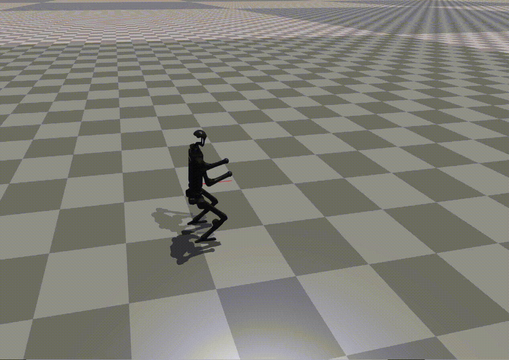
Observation: While most models reproduce reward structure correctly, numerical misspecification often leads to unstable or ineffective policies.
Reward Generation: Combined Skill - Button Press
The Button Press task requires composing walking and reaching:
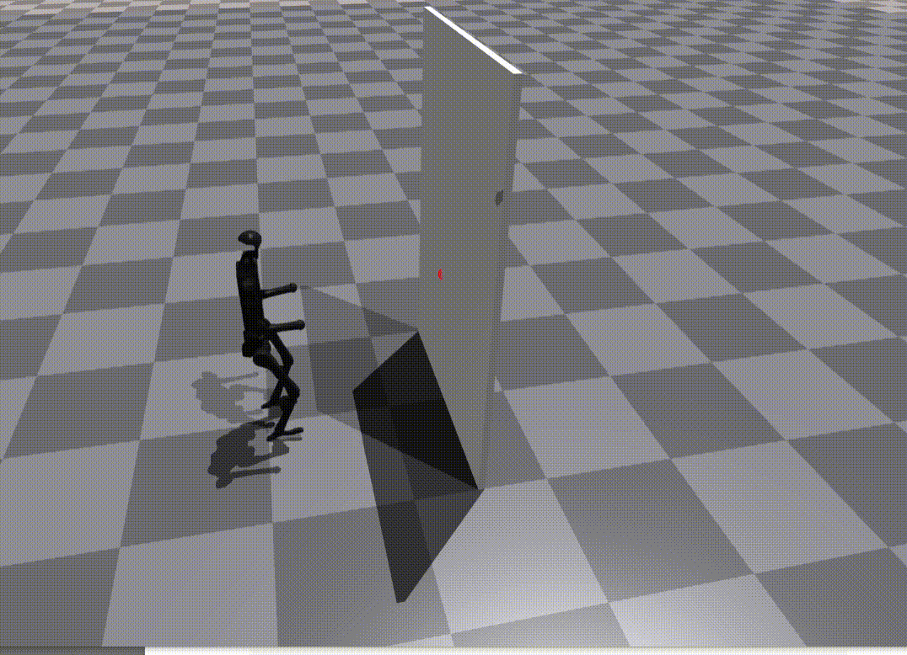
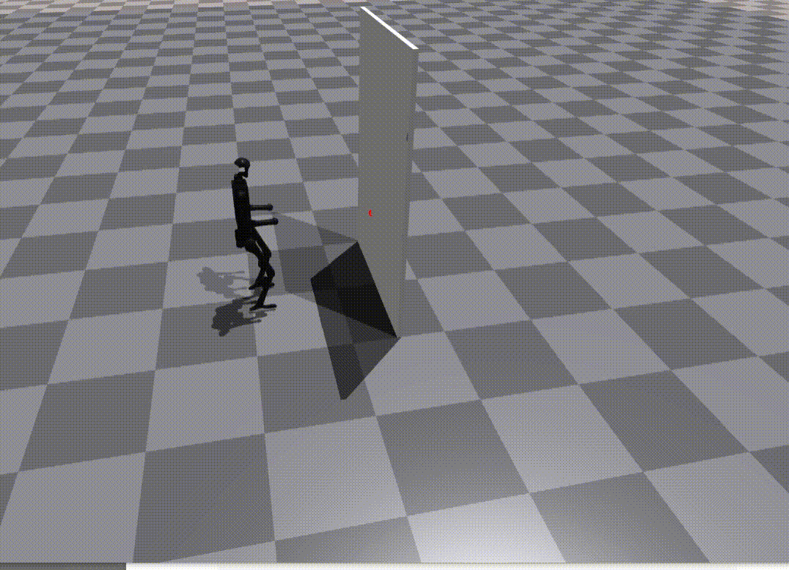
Result: Only Claude-generated rewards successfully enable task completion.
Most models produce rewards that cause the robot to remain stationary, highlighting the difficulty of multi-stage skill composition.
Learning New Skills
The framework can generate and train rewards for previously unseen skills:
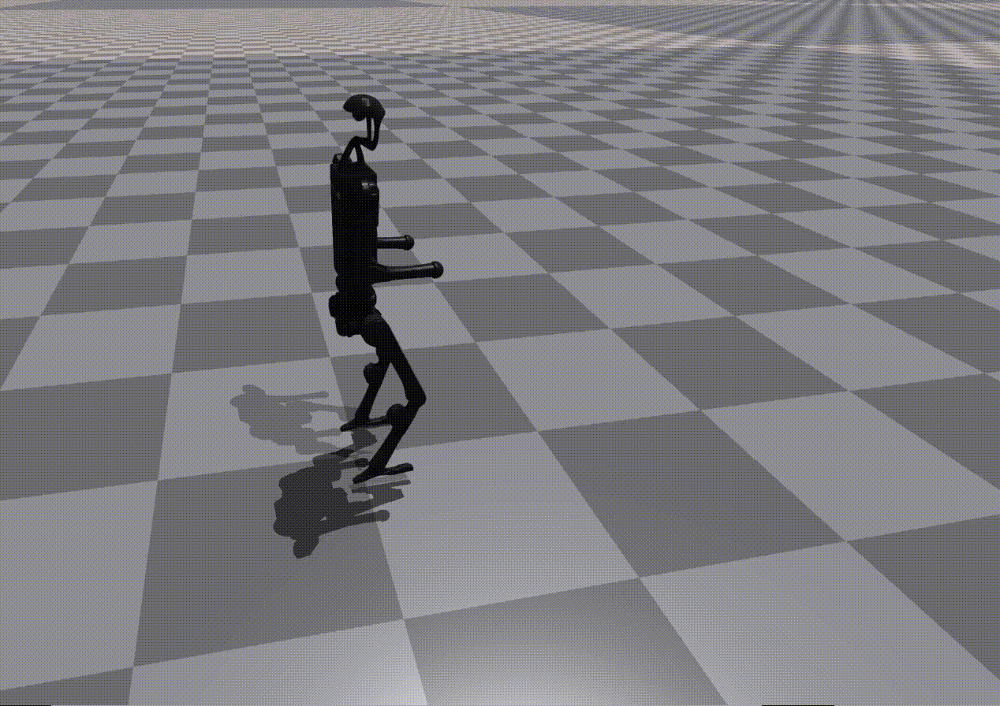
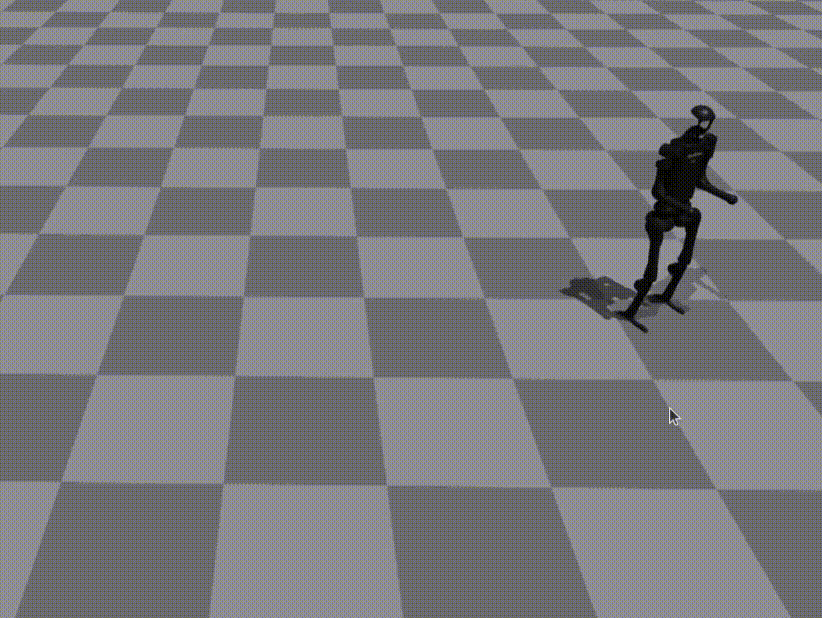
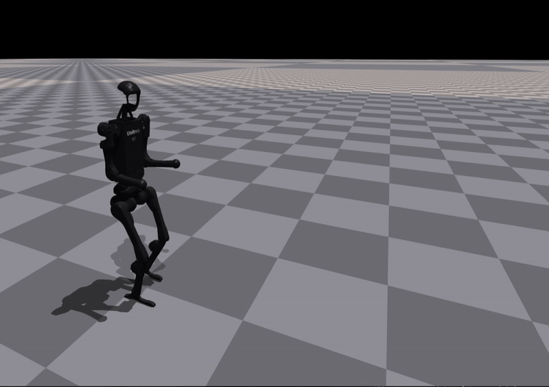
Insight: Some skills are successfully learned, while others require iterative refinement, validating the need for a closed-loop reward evolution mechanism.
Prompt Design
We design explicit, constrained prompts for each stage to ensure consistency, interpretability, and reproducibility.
Task Decomposition Prompt
You are a high-level humanoid motion planner and meta-skill developer.
Your task is to decompose a long-horizon natural-language goal into a sequence of
short, atomic subtasks. Each subtask must include a concise "subgoal" (one line of natural language)
and a list of "skills" required to achieve it.
You currently have access to the following SKILL LIBRARY:
{SKILL_LIBRARY}
For every subgoal:
1. Compare the subgoal against the skills in the current library.
2. If ALL required abilities exist, reuse them directly.
3. If the subgoal requires a new ability not in the list, invent a new skill:
- Use short (1–2 words), descriptive, physically plausible humanoid actions
- Avoid abstract or cognitive terms
- Do not use synonyms of existing skills unless functionality differs
- If no existing skill fully covers the subgoal, you must create a new primitive skill
The final output must be a valid JSON object of the form:
{
"subtasks": [
{"subgoal": "<short actionable goal>", "skills": ["Skill1", "Skill2", ...]},
...
]
}
Guidelines:
- Ensure subtasks are sequential and fully cover the task
- Keep skill names capitalized and concise
- Keep subgoals to one line
- Return only the JSON with no explanations or comments
Reward Generation Prompt
You are a code-generation agent designing a new humanoid skill reward function.
Return only valid Python code defining the reward class.
Do not include explanations, markdown fences, comments, or introductory text.
Below are the existing primitive skill rewards currently used:
<existing_rewards>
{reward_context}
</existing_rewards>
Analyze these to understand parameter conventions and scaling.
Below is the humanoid environment definition used for training:
<environment_context>
{env_context}
</environment_context>
Now, design a NEW reward class for the following subgoal and skill:
Subgoal: {subgoal}
Skill: {skill_name}
Rules:
1. Maintain the same Python class structure (class rewards: with nested class scales:)
2. Reuse ONLY variables, parameters, and scale names already defined
3. Do NOT invent new variables or physics metrics
4. Keep numerical scales realistic and consistent with reference rewards
5. Return only valid Python code, with no explanations or comments
Reward Refinement Prompt
You are a humanoid reward designer.
The following reward function was trained in RL but performed poorly.
Subgoal: {subgoal}
Skill: {skill}
[Generated reward]
{generated_reward}
[Observed RL feedback metrics]
{feedback_str}
Based on these feedback metrics, rewrite the reward function to:
1. Improve stability, convergence, and success rate
2. Keep structure consistent with existing reward format (class rewards: with nested scales)
3. Keep parameter names consistent
4. Adjust only scale magnitudes or add missing shaping terms if necessary
Output only the corrected Python code starting with 'class rewards:'.
Do NOT include explanations or markdown.